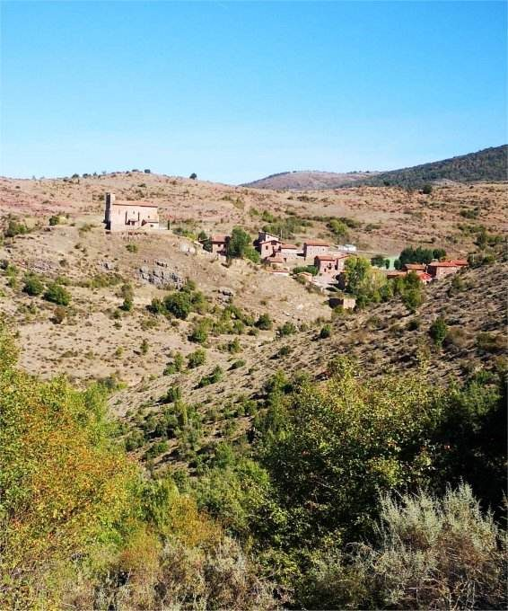
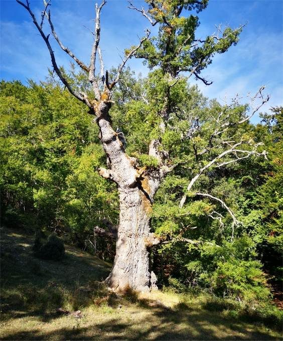

Quejigo de Pinillos
Pinillos · comarca del Iregua
- Distancia3,9 km
- Desnivel225 m
- Tiempo orientativo1 h 30 min
- Dificultadmedia
- Época recomendadaprimavera y otoño
- Terrenosenda
Volvemos de nuevo a una dehesa para visitar este “Lugar con encanto”.
La dehesa de Pinillos está principalmente colonizada por quejigos y algunas hayas. Entre los primeros, destaca el conocido como “Quejigo de Alejandro”, recogido en el Inventario de árboles singulares de La Rioja con el n.º 45. El tamaño y porte de los quejigos hacen de esta dehesa algo también singular.
El objetivo del día es encontrar un árbol dentro de un bosque, cosa nada sencilla si no fuese porque el recorrido desde el pueblo está balizado mediante marcas de pintura blanca.
Aprovecharemos también para, en lugar de realizar la ida y la vuelta por el mismo trazado, seguir explorando la dehesa y acercarnos a un precioso hayedo sobre el que discurre el antiguo sendero que une Pinillos con Gallinero de Cameros.


Recorrido
Comenzamos el paseo atravesando cualquiera de las portezuelas metálicas de color verde que hay en la parte baja del pueblo. Enseguida identificamos algunas marcas de pintura blanca que nos acompañarán siempre, hasta llegar al Quejigo.
Tomamos un camino firme muy marcado que nos lleva al fondo del cauce del Arroyo de Río Seco.
Atravesamos un sólido puente y, tras pasar a la margen contraria del cauce, abandonamos el camino y tomamos un sendero, a la izquierda, que nos hace ganar altura rápidamente.
Tras suavizarse la pendiente, entramos en una zona de densa vegetación donde contemplamos algunos quejigos de espectacular porte.
Más arriba, la presencia de algunas hayas nos anuncia la proximidad del Quejigo de Alejandro. Viramos hacia la izquierda y llegamos junto a él.
Para continuar el recorrido es aconsejable seguir la ruta mediante GPS. A partir de este punto, ya no hay señalización y la dehesa está atravesada por numerosos senderos, sin garantía de llevarnos a nuestro destino.
Descendemos a media ladera y el sendero cada vez se hace más marcado. Llegamos junto a un oscuro rincón en una vaguada de frescas hayas.
Atravesamos en sentido descendente la corriente del pequeño arroyo, girando hacia nuestra izquierda.
Enseguida vemos que ya hemos tomado la dirección de regreso hacia Pinillos.
Dejamos atrás el bosque de hayas y faldeamos a media ladera por un sendero con mal firme entre pequeños arbustos.
Atravesamos una pequeña corriente de agua, pasamos junto a un pequeño lavadero y ascendemos al pueblo para finalizar el recorrido.


{kind=link}
{kind=link}